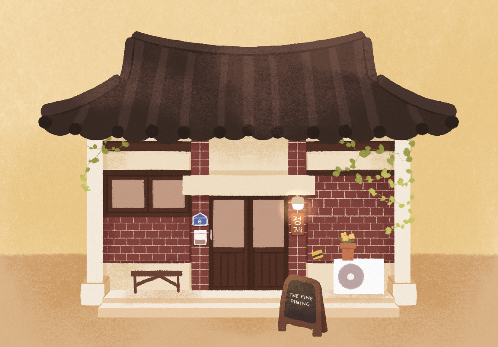
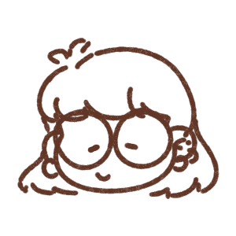
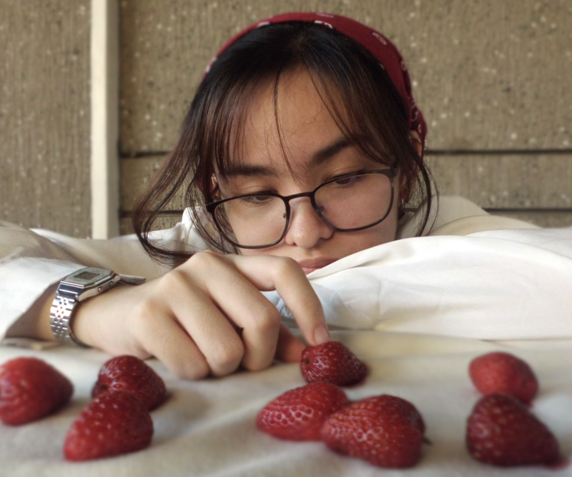
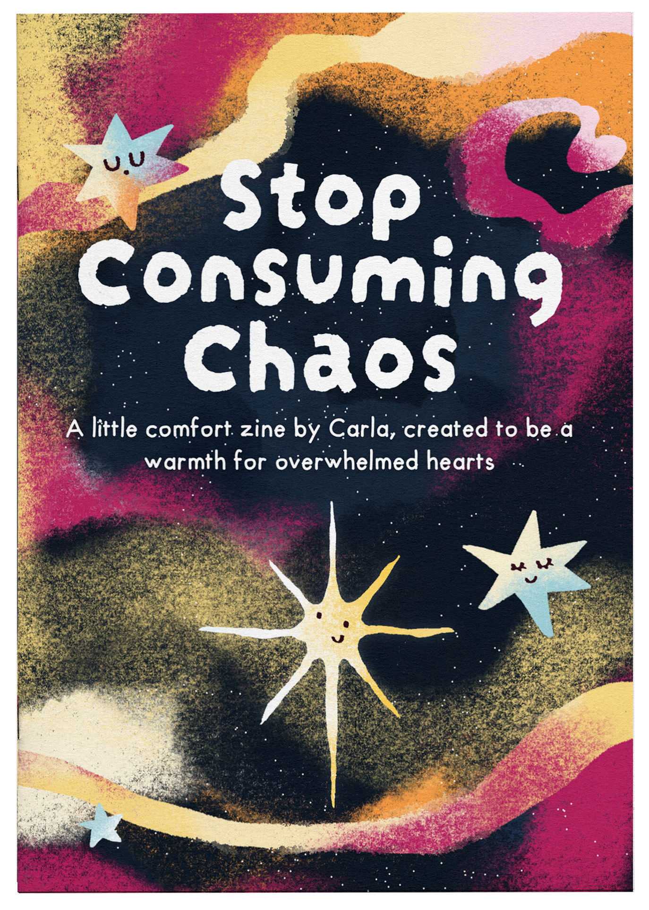
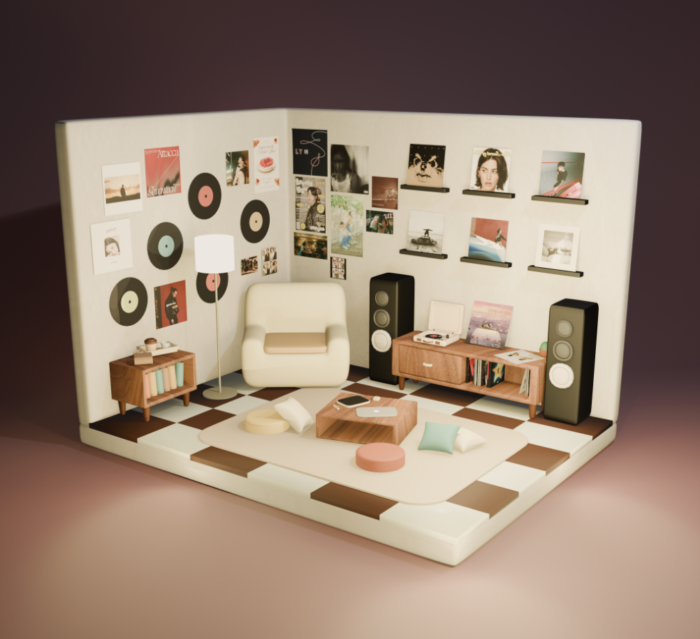

Jungjae Restaurant

Year: 2025
A warm, cozy illustration of Jungjae Restaurant from "Tastefully Yours" (2025), a K-drama on Netflix.

Making art with every heartbeat!

Ma. Carla Lucila C. Vistan is a Filipino multimedia artist specializing in illustration. She is currently pursuing a Bachelor of Arts in Multimedia Studies (BAMS) at the University of the Philippines Open University while working as an illustrator and, occasionally, an animator depending on the project. Carla creates heartfelt, cute artwork, blending illustration and design into playful, meaningful pieces inspired by everyday moments and little snippets from her beloved journal!
An INFJ-T who's a little awkward (even in DMs!) but always doing her best, Carla hopes to continue growing through her art, share her passion with others, and one day live a peaceful life with her loved ones--with a pencil in hand and, maybe, a cozy cafe of her own! :D

Year: 2025
A warm, cozy illustration of Jungjae Restaurant from "Tastefully Yours" (2025), a K-drama on Netflix.

Year: 2025
This zine started as a journal entry I decided to turn into something visual. I used bright, fun colors to keep the theme light and approachable, even though it talks about chaos and overwhelm. It's a personal project about slowing down, choosing gentleness, and finding small moments of calm in a noisy world.

Year: 2024
A chill little music corner I built in Blender back in 2024, when I was still experimenting with the software. To make studying more fun, I turned it into a cozy space full of vinyl records and the music I loved, including my favorites from that time!
email: mcvistan@up.edu.ph